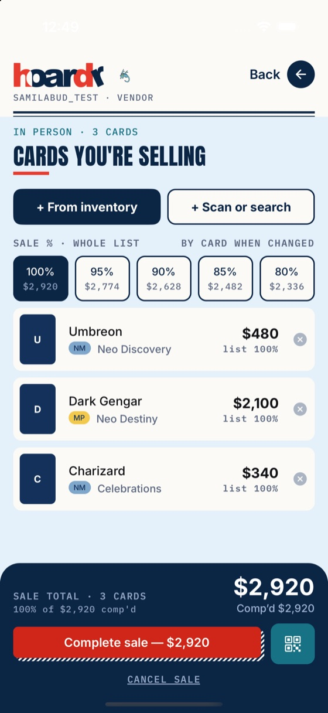
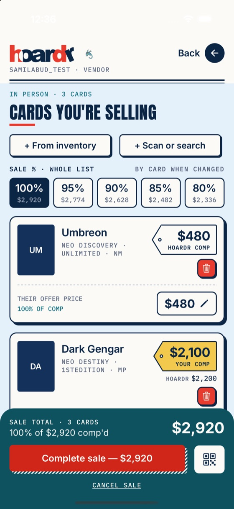
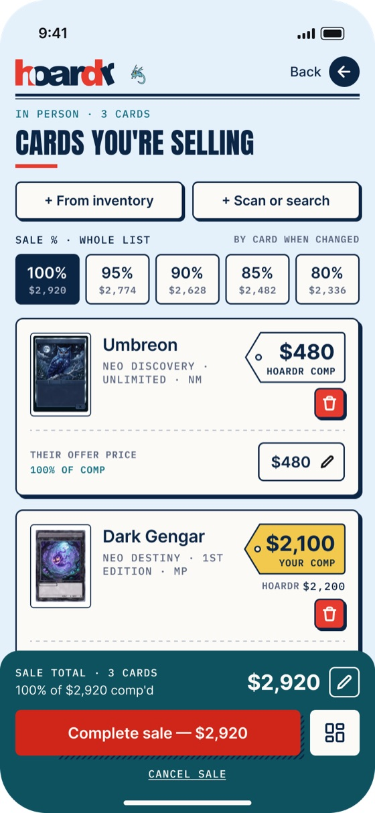
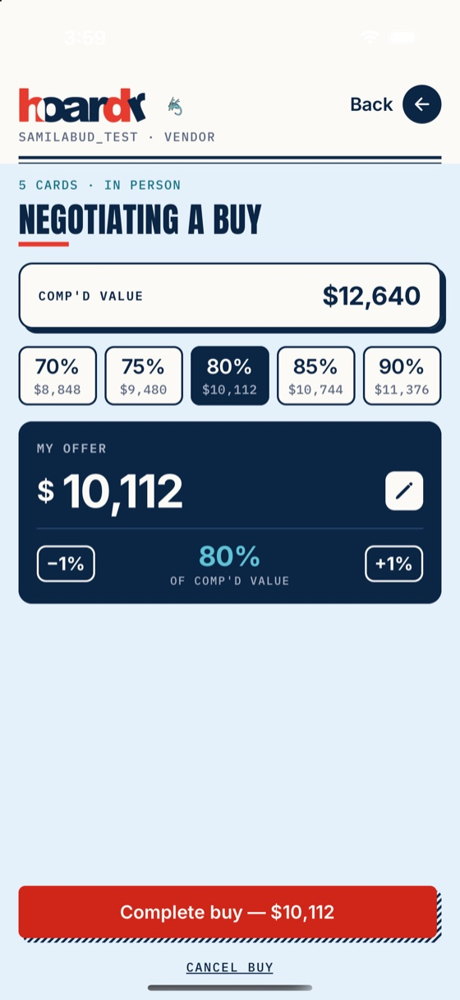
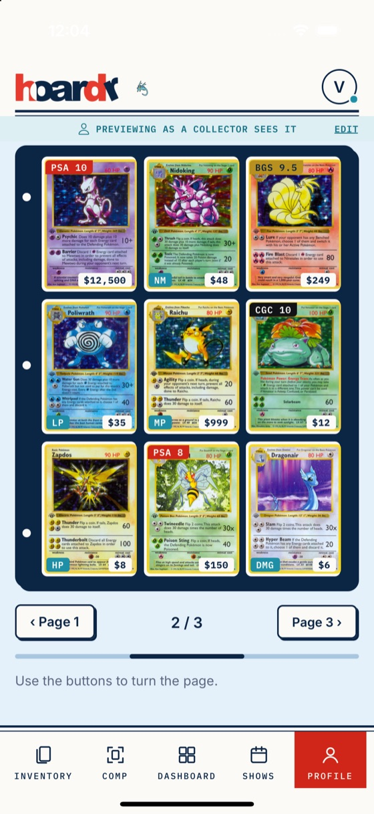

Making a production React Native app match its Figma, screen by screen
The job
The app worked, but many screens had drifted from the Figma designs: spacing off by a few points, hard-coded colors and type sizes, legacy components next to new ones. The brief was a "look only" polish pass: make the screens match the Figma source of truth without changing behavior, data or navigation, and without breaking a production codebase that was still changing under me.
How I worked
1. Pull the designs into the repo, don't eyeball them
I wrote a small script against the Figma REST API that lists the phone frames by name, filters out old and out-of-scope ones, and exports each at 2x. Every PR then had its frames next to the code. No "it looks about right".
2. Measure, don't guess
A frame is 2x and the iOS simulator is 3x, so I compared both in points with a pixel script: element sizes, gaps, text widths, tray heights, at least four elements per screen. That caught 3 to 9pt errors that looked fine by eye. I recorded the numbers in each PR so the reviewer could check them.



3. Reuse shared pieces instead of restyling per screen
Rather than patching dozens of screens one by one, I moved the look into shared components (buttons, hard-shadow cards, segmented controls, price tags, bottom trays, titles) and migrated screens onto them. Each change to a shared piece came with a ripple check of every other screen that uses it.
4. Never touch production data
The test account pointed at live data. Before running any flow I listed every write (complete sale, confirm trade, profile save, sign out) and stubbed all of them in a temporary in-memory overlay that was reverted before each commit. A pre-review checklist (measurements, shared-piece ripple, project rules, my own screenshots) ran before every PR was opened.
5. Flag instead of build
When a frame needed new logic or data (for example per-card trade locks, a photo viewer, or swipe-to-turn binder pages), I did not quietly build it. I listed it in the PR as a flag so the client decided, which kept the scope honest and the diffs reviewable.


Working with the client's review
Each PR got fast feedback, and I turned it around the same day. Examples: show the bottom tab bar until something is added to a sale; use buy wording (not Comp wording) in the clear dialog; make the profile binder one 3×3 page at a time, like a real binder, instead of an endless scroll. For the binder I also tested iPhone SE, 16 Pro and Pro Max and Dynamic Type, found the price and condition chips overlapping on narrow cards, and fixed that.
Result
- 17 pull requests merged in 11 days, with the test suite and TypeScript checks green on each one.
- Screens measured against the Figma in points, with the numbers and before/after screenshots in each PR description.
- A shared design layer the client can keep building on, plus a written list of the features that still need new logic.
What I'd do again
Script the boring parts (frame export, measurement), keep PRs reviewable, and be explicit about what is out of scope. It is the difference between a polish pass that lands and one that quietly grows.